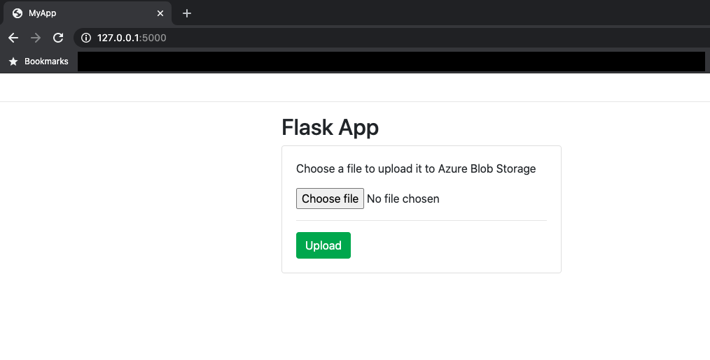

I recently started my Fall semester with Georgia Institute of Technology doing the course ISYE6748: Applied Analytics Practicum. The objective of this course is to give an opportunity to students to apply their data science knowledge to solve real business problems. You can find out more about the course via this link.
The project that I chose to work on is to help a US-based startup with extraction and categorization of information from PDF documents. The proposed workflow involves storing existing/new the files on Azure Blob Storage and run an NLP algorithm to output relevant sections of the documents for categorization.
The purpose of this blogpost is to explain how I designed and created a simple Flask webapp to upload files to Azure Blob Storage using Docker.
Building the App Locally
There are essentially six files that should be created for this app to work. The file-tree below shows those files as well as their locations in the poject folder:
Flask_Web_App/
┣ templates/
┃ ┗ index.html
┣ Dockerfile
┣ config.py
┣ flask_app.py
┣ requirements.txt
┗ run_waitress_server.pyIndex.html
This is where you design the app that will be seen by the users.
<!DOCTYPE html>
<html lang="en">
<head>
<meta charset="utf-8" />
<link rel="apple-touch-icon" sizes="76x76" href="static/img/apple-icon.png">
<link rel="icon" type="image/png" href="../assets/img/favicon.png">
<meta http-equiv="X-UA-Compatible" content="IE=edge,chrome=1" />
<title>MyApp</title>
<meta content='width=device-width, initial-scale=1.0, maximum-scale=1.0, user-scalable=0, shrink-to-fit=no' name='viewport' />
<!-- Fonts and icons -->
<link href="https://fonts.googleapis.com/css?family=Montserrat:400,700,200" rel="stylesheet" />
<link href="https://maxcdn.bootstrapcdn.com/font-awesome/latest/css/font-awesome.min.css" rel="stylesheet">
<!-- CSS Files -->
<link href="static/css/bootstrap.min.css" rel="stylesheet" />
<link href="static/css/paper-dashboard.css?v=2.0.1" rel="stylesheet" />
<!-- CSS -->
<link href="static/demo/demo.css" rel="stylesheet" />
<meta charset="utf-8">
<meta name="viewport" content="width=device-width, initial-scale=1">
<link rel="stylesheet" href="https://maxcdn.bootstrapcdn.com/bootstrap/4.5.0/css/bootstrap.min.css">
<script src="https://ajax.googleapis.com/ajax/libs/jquery/3.5.1/jquery.min.js"></script>
<script src="https://cdnjs.cloudflare.com/ajax/libs/popper.js/1.16.0/umd/popper.min.js"></script>
<script src="https://maxcdn.bootstrapcdn.com/bootstrap/4.5.0/js/bootstrap.min.js"></script>
</head>
<body>
<div class="navbar">
<h2> </h2>
</div>
<hr>
<div class="container">
<h2>Flask App</h2>
<div class="card" style="width:400px">
<div class="card-body ">
<form action="/upload" method="POST" enctype="multipart/form-data">
<p class="card-text">Choose a file to upload it to Azure Blob Storage</p>
<input type="file" name="file" value="file">
<hr>
<input type="submit" name="upload" value="Upload" class="btn btn-success">
</form>
{{msg}}
</div>
</div>
<br>
</div>
</body>
</html>The above produces the following interface:

Dockerfile
This where you create you build your container for the app that will be later deployed as webapp to Azure.
FROM python:3.6
RUN mkdir /code
WORKDIR /code
ADD . /code/
RUN pip install --upgrade pip && \
pip install -r requirements.txt && \
pip install Werkzeug
EXPOSE 8080
CMD ["python", "/code/run_waitress_server.py"]Config.py
Not necessary for your app to work but it is important to follow software engineering best practices. Within that file, I defined the app settings, see below:
ACCOUNT_NAME = "XXXXXXXXXXXXXXXXXXXX"
ACCOUNT_KEY = "XXXXXXXXXXXXXXXXXXXXXXXXXXXXXXXXXXXXXXXX"
CONNECTION_STRING = "XXXXXXXXXXXXXXXXXXXXXXXXXXXXXXXXXXXXXXXXXXXXXXXXXXXXXXXXXXXX"
CONTAINER = "XXXXXX"
ALLOWED_EXTENSIONS = set(['txt', 'pdf', 'png', 'jpg', 'jpeg'])
MAX_CONTENT_LENGTH = 20 * 1024 * 1024 # 20 Mb limitflask_app.py
This is the back-end of the MyApp allowing any user to click on the Choose file button and then click on the Upload button.
from flask import Flask, request, render_template, redirect, url_for
from werkzeug.utils import secure_filename
from azure.storage.blob import BlobServiceClient
import os
app = Flask(__name__, static_folder='static', static_url_path='')
app.config.from_pyfile('config.py')
account = app.config['ACCOUNT_NAME'] # Azure account name
key = app.config['ACCOUNT_KEY'] # Azure Storage account access key
connect_str = app.config['CONNECTION_STRING']
container = app.config['CONTAINER'] # Container name
allowed_ext = app.config['ALLOWED_EXTENSIONS'] # List of accepted extensions
max_length = app.config['MAX_CONTENT_LENGTH'] # Maximum size of the uploaded file
blob_service_client = BlobServiceClient.from_connection_string(connect_str)
def allowed_file(filename):
return '.' in filename and \
filename.rsplit('.', 1)[1] in allowed_ext
@app.route('/upload',methods=['POST'])
def upload():
if request.method == 'POST':
img = request.files['file']
if img and allowed_file(img.filename):
filename = secure_filename(img.filename)
img.save(filename)
blob_client = blob_service_client.get_blob_client(container = container, blob = filename)
with open(filename, "rb") as data:
try:
blob_client.upload_blob(data, overwrite=True)
msg = "Upload Done ! "
except:
pass
os.remove(filename)
return render_template("index.html", msg=msg)
if __name__ == "__main__":
app.run()Whilst crucial aspects such as security and QA testing were ignored, the Flask app shown above works as intended.
- The
allowed_filefunction checks whether the file being uploaded has one of the extensions listed inALLOWED_EXTENSIONS.
- The
uploadfunction calls upon@app.routewhen aPOSTrequest is sent to the browser then uploads it to an Azure Blob Storage. Thefilenameobject holds the submitted file object whichFlaskimports fromWerkzeug.
requirements.txt
This is the file used for specifying what python packages are required to run the project you are looking at.
azure-common==1.1.24
azure-nspkg==3.0.2
azure-storage==0.36.0
azure-storage-blob==12.5.0
Flask==1.1.2
pylint==2.6.0
waitress==1.0.1run_waitress_server.py
This file is used to specify how the app will be served:
hostto specify the hostname or IP addressportto specify port number to listen
import os
from waitress import serve
from flask_app import app
serve(app, host='0.0.0.0', port=8080)All you have to do is to build the Docker image and run it locally:
$ docker build -f Dockerfile -t MyApp:latest .- Test your Docker container running your newly created Flask App:
$ docker run -p 8080:8080 -e AZURE_STORAGE_KEY=<ACCOUNT_KEY> --rm MyAppDeploying the App on Azure
Now that the Flask App has been tested locally, it is time to deploy that on Azure. I will assume that you have a Microsoft Azure account and the following items set up:
- Azure Subscription
- Azure Resource Group
- Azure CLI
- Docker
Azure Container Registry (ACR)
Azure Container Registry is an essential piece for the deployment of the FLask App as it is the private Docker registry in Azure for all artifacts. The Docker image of our web app will be hosted on ACR.
Using a command line interface, we create a container registry:
az acr create --name <Container_Registry_Name> --resource-group <Resource_Group_Name> --sku basic --admin-enabled trueBuild Docker Image and Save to ACR
Using a CLI, we build the Docker image and push it to Azure Container Registry:
az acr build --registry <Container_Registry_Name> --resource-group <Resource_Group_Name> --image <Image_Name> .Deploy Web App from ACR
Before we deploy our Flask app as web app, we need to create an actual instance of your web application (i.e. App Service Plan). What does that entail? It entails creating a virtual machine that will run the Flask App Docker image.
Using CLI, we create the app service plan:
az appservice plan create -g <Resource_Group_Name> --name <App_Service_Plan_Name> --location australiaest --is-linux --sku F1Finally, we create the Azure web app from the docker container in the Container Registry:
az webapp create -g <Resource_Group_Name> -p <App_Service_Plan_Name> -n <Flask_Web_App_Name> -i <Container_Registry_Name>.azurecr.io/<Image_Name>:latestTo view your new website, go to your new web app resource and select Browse….and voila!!
I hope you found this blogpost useful. Please drop a comment/remark below :-)